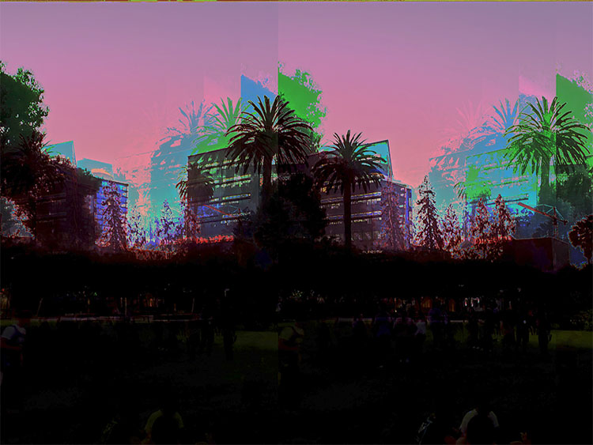

Final Project
For my Final Project for my ART-74 class, I wanted to expand upon my glitch art series. The idea with this series has to do with the current situation, the COVID-19 pandemic, shelter in place, and social distancing, resulting in malfunction and error, and how society and certain places in reality seem to not function properly, as they once have.
Alleyway

Cityscape
Landscape
Library
Streets

Time